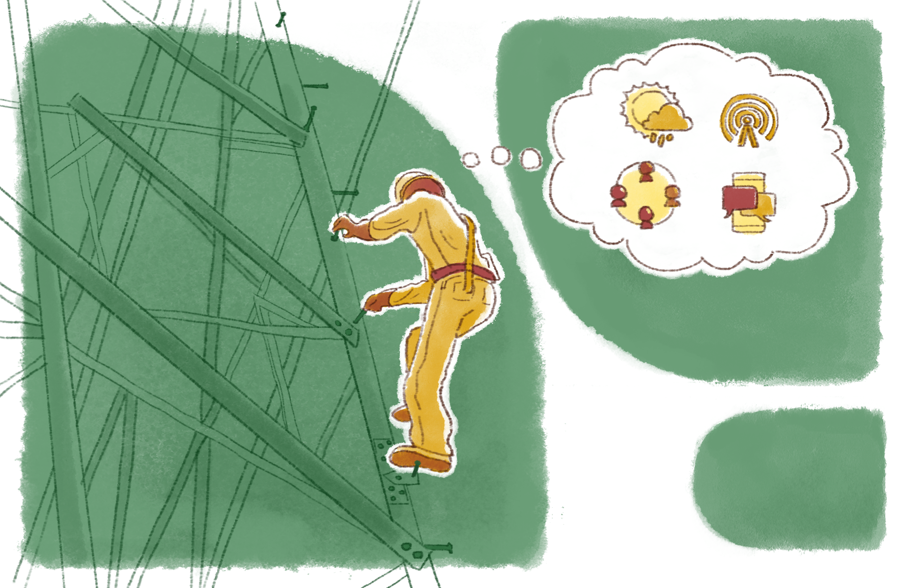

A politecnia e sua efetivação na EPT
A história da EPT no Brasil evidencia, através de discursos, legislações, programas e planos implementados, as disputas por hegemonia que ora são de cunho liberal, ora neoliberal, ora progressista. Quando essa modalidade educacional surgiu no país, preponderaram finalidades assistencialistas e de contenção social. Contudo, com o crescimento e a diversificação das atividades econômicas, ela passou a ser regulada pelas forças do mercado, ampliando seu caráter de educação instrumental, tecnicista e dual.
No entanto, para ser efetivamente um instrumento de autêntica representação da classe trabalhadora, é preciso reivindicar espaços e perspectivas de emancipação humana e de transformação social embasadas em propostas de educação omnilateral e também politécnica.
Mas, afinal, o que vem a ser politecnia? Como pensar a sua efetivação na EPT?
Podemos inferir, pois, que o alcance de uma educação profissional e tecnológica crítica e emancipatória requer a superação do discurso e das práticas pedagógicas hegemônicas e o deslocamento da centralidade no mercado de trabalho para a primordialidade do mundo do trabalho. Esse deslocamento é fundamental à formação de trabalhadores críticos, socialmente ativos e emancipados.
Nesse sentido, você conseguiria reconhecer os indicadores do discurso hegemônico dificultadores da sua superação? E, também, as noções que fundamentam esse discurso transformando-as em objeto de reflexão? Conseguiria esclarecer outros enunciados e práticas capazes de abrir caminho para estratégias contra-hegemônicas, em favor da EPT emancipatória? Seria capaz de desnudar a discursividade hegemônica e como ela escamoteia a realidade na forma de senso comum? Como desvendar as formas dominantes de impor a obediência e da exploração do trabalho assalariado?
Em seus processos formativos, a EPT deve ampliar a visão de mundo dos estudantes por meio de reflexões e práticas fundamentadas pelas “[...] tensões no campo das ideias, inspirando e orientando a ação política de toda a classe trabalhadora” (Barros; Silva, 2021, p.128). Valores, crenças, impressões, sentimentos e concepções remetem a diferentes percepções do mundo do trabalho e das diferentes dimensões que o comportam, dentre elas a lógica mercantil que preside a compra e venda da força de trabalho com todas as suas contradições.
O que está em questão, aqui, é a necessidade de desenvolvimento da EPT capaz de pôr em prática uma educação omnilateral, tecnológica ou politécnica formadora de sujeitos autônomos e protagonistas da cidadania ativa.
Dotada da perspectiva do trabalho como princípio educativo e da formação dos sujeitos por meio do desenvolvimento do pensamento reflexivo mais complexo e crítico, a EPT se impõe à condução da interpretação das contradições da realidade com vistas à sua superação e à formação de sujeitos não mais reféns do discurso hegemônico como única e última possibilidade.
Nessa altura, você deve perceber que a busca por esse movimento contra-hegemônico não é uma ação simples.
Isso ocorre porque se trata de uma busca que passa pela perspectiva do desenvolvimento humano em suas múltiplas dimensões (omnilateralidade), da escola unitária e politécnica, como forma de efetivar a superação das dicotomias entre educação geral versus específica, humanista versus técnica, teórica versus prática, profissional técnico versus político etc.
Você saberia dizer quais são as medidas que a Educação Profissional e Tecnológica precisa adotar urgentemente? Vamos refletir juntos.

Para começo de conversa, seria necessário que as propostas pedagógicas partissem dos saberes e das experiências já adquiridos pelos estudantes e das suas experiências de práticas laborais. Um passo além seria dado pela saturação de saberes sobre o uso e as finalidades dos instrumentos de trabalho, fazendo-os interagir com os conhecimentos científicos e tecnológicos. Tudo isso considerando aspectos de ordem cultural, ética e política para que os estudantes se vejam concretamente como sujeitos ativos.
Aqui entra a proposta da educação politécnica como alternativa para a superação da dualidade estrutural e fragmentadora da educação profissional e tecnológica; portanto, da “[...] dicotomia entre trabalho manual e trabalho intelectual, entre instrução profissional e instrução geral” (Saviani, 1989, p. 13).
A educação politécnica, conforme explica Saviani (1989), entende o trabalho como unidade indissociável, não sendo possível a separação entre elementos manuais e intelectuais nele envolvidos. Essa dissociação somente seria permitida como produto histórico-social a ser superado; portanto, não absoluta, mas relativa. Desse modo, a educação não poderia ser dividida entre geral e específica, já que a formação ampla do trabalhador precisa ter em vista sua capacidade de apropriação da técnica como ciência e cultura.
Saviani (1989, p. 17) recorda que a politecnia está vinculada ao “[...] domínio dos fundamentos científicos das diferentes técnicas que caracterizam o processo de trabalho produtivo moderno”. Nesses termos,
Supõe-se que, dominando esses fundamentos, esses princípios, o trabalhador está em condições de desenvolver as diferentes modalidades de trabalho, com a compreensão do seu caráter, da sua essência. Não se trata de um trabalhador que é adestrado para executar com perfeição determinada tarefa, e que se encaixe no mercado de trabalho para desenvolver aquele tipo de habilidade. Ele terá um desenvolvimento multilateral, um desenvolvimento que abarca todos os ângulos da prática produtiva moderna, na medida em que ele domina aqueles princípios, aqueles fundamentos, que estão na base da organização da produção moderna.

Título: A complexidade do trabalho técnico envolvendo diferentes saberes
Fonte: Prosa (2024e).
A politecnia é um conceito realmente muito interessante e relevante, por sua própria natureza, no âmbito da EPT. Você pode aprofundar seu entendimento desse conceito e seus impactos através da leitura do artigo O choque teórico da politecnia, do professor Dermeval Saviani (2003).